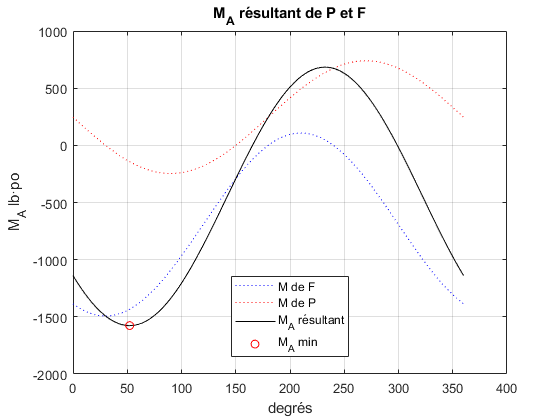

Problème 2/56, Meriam p. 49

Contents
Démarche scalaire (a et b)
Appliquer le théorème de Varignon.
- Évaluer les composantes rectangulaires de la force de 100 lb (F).
clear; clc; close all;
a) Norme de P
mF = 100; % Norme de la force, lb theta = 60; % degrés, selon la figure % Norme (+) : dans le sens antihoraire Fx = mF*cosd(theta); Fy = mF*sind(60); Mc = Fx*4 - Fy*8; % - P*8 = Mc mP = -Mc/8; % dans le sens de la flèche fprintf(['(a) P = %.1f lb dans le sens de ',... 'la flèche\n'],mP);
(a) P = 61.6 lb dans le sens de la flèche
(b) La norme R de la résultante R
Rx = -Fx -mP; Ry = Fy;
norme = sqrt(Rx^2+Ry^2);
fprintf('(b) Norme de R = %.1f lb\n',norme);
(b) Norme de R = 141.3 lb
Démarche vectorielle (c et d)
Coordonnées du point A où le moment est au maximum en valeur absolue sur le cercle.
Le moment causé par une force est au maximum à 90° de l'axe d'application de la force. De plus, le bras de levier doit être le plus long possible.

Exemple : DQ pour F et SQ pour P
Des lignes parallèles inférieures à DQ produisent un bras de levier légèrement plus grand pour F. Par contre, le bras de levier de P est plus court.
Toutefois, en bas du point S, le moment de la force P s'oppose à celui généré par F.
Des lignes parallèles supérieures à DQ font diminuer le bras de levier de F et augmenter celui de P jusqu'à l'axe des y.
La solution est donc dans le premier quadrant. On recherche la solution en appliquant le produit vectoriel et le théorème de Varignon.
F = [-Fx,Fy,0]; P = [-mP,0,0]; xF = -8; yF = 0; yP = 4; POH = asind(4/8); xP = 8*cosd(POH); % POH = 30° angle = 0:0.1:360; % coordonnées du point recherché sur le cercle x=8*cosd(angle); y=8*sind(angle); % Pseudo-déclaration MdeF = zeros(size(angle)); MdeP = zeros(size(angle)); M_A = zeros(size(angle)); for i = 1:length(angle) rF=[xF-x(i),yF-y(i),0]; rP=[xP-x(i),yP-y(i),0]; M_F = cross(rF,F); M_P = cross(rP,P); MdeF(i)=M_F(3); MdeP(i)=M_P(3); % afin de conserver le signe du moment en z. M_A(i) = M_F(3) + M_P(3); end
Comme le moment recherché est dans le sens horaire, il faut identifier le moment minimum.
Calculer la norme avec la fonction norm parraît une solution acceptable. Cependant, le signe du moment est une information nécessaire pour tracer le moment résultant sur le cercle de 0 à 360°, en tenant compte du sens de rotation.
[valeur, indice]=min(M_A); plot(angle,MdeF,':b'); hold on; plot(angle,MdeP,':r'); plot(angle,M_A,'-k'); grid on; plot(angle(indice),M_A(indice),'or'); xlabel('degrés'); ylabel('M_A lb·po'); title('M_A résultant de P et F') legend('M de F','M de P','M_A résultant',... 'M_A min','location','best');

fprintf(['(c) Coordonnées de A: ',... '(%.2f, %.2f) po,'],x(indice),y(indice)); fprintf(' soit à %.1f°\n',angle(indice)); fprintf('(d) M_A = %.0f lb·po',... abs(valeur)); % abs : valeur absolue MomentPositif = valeur > 0; if(valeur) fprintf(' dans le sens antihoraire\n'); else fprintf(' dans le sens horaire\n'); end
(c) Coordonnées de A: (4.90, 6.32) po, soit à 52.2° (d) M_A = 1577 lb·po dans le sens antihoraire